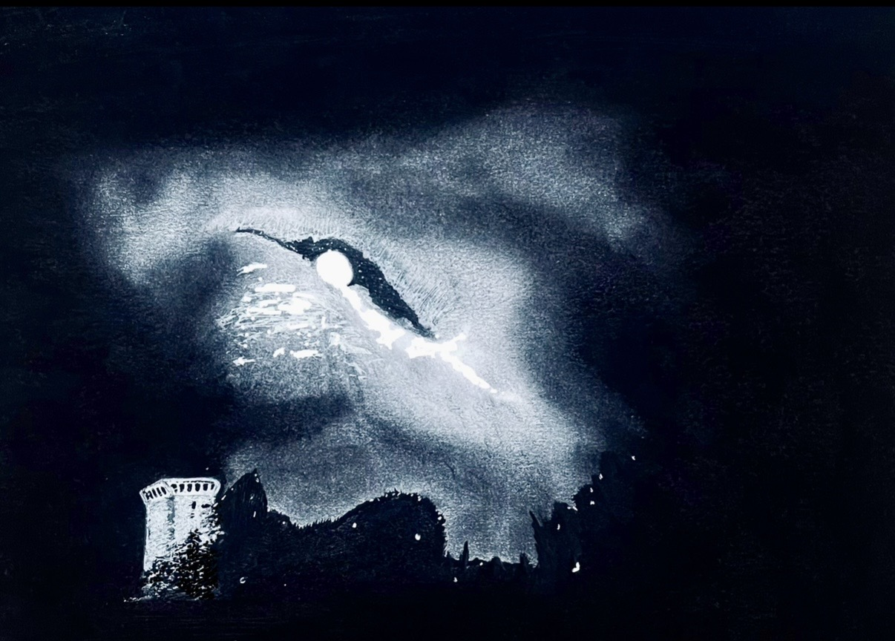

смотреть чуть выше крыш домов
guardare un po' più su dei tetti
look a little above the rooftops

смотреть чуть выше крыш домов,
падать чуть ниже сугробов.
чуть улыбаться прохожим,
только услышав их голос.
немного теряться при виде
мерцающих глаз незнакомых,
в себя влюбить повседневность
остаться константой меж полос.
сильно жалеть о несделанном,
немного гордиться успехами.
остаться в городе-призраке,
надменным богам на утеху.
guardare un po' più su dei tetti,
cadere un po' più giù della neve.
sorridere appena ai passanti,
solo dopo aver sentito la loro voce.
smarrirsi un po' alla vista
di scintillanti occhi estranei,
far innamorare di sé la quotidianità,
restare una costante tra le linee.
pentirsi a fondo del non fatto,
essere un po' fieri dei successi.
restare in questa città fantasma,
per il diletto di dèi arroganti.
look a little above the rooftops,
fall a little beneath the snowdrifts.
smile slightly at passersby,
only upon hearing their voice.
get a little lost at the sight
of flickering unfamiliar eyes.
make the mundane fall in love with you,
remain a constant between the lines.
deeply regret what’s left undone,
be a little proud of your successes.
remain in the ghost town,
for the amusement of arrogant gods.